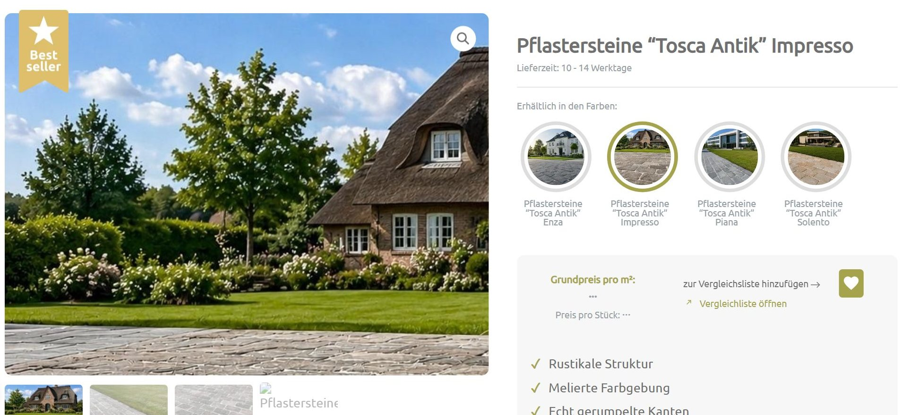

Betreuung und Absicherung
Zwischen dem Bekanntwerden einer Lücke in einem WordPress-Plugin und dem ersten Angriff vergehen oft nur Stunden. Ich halte Ihre Seite deshalb laufend aktuell und sehe regelmäßig nach, ob sie sauber läuft.
Ich entwickle Websites und Onlineshops, binde sie an Ihre übrigen Systeme an und betreue sie, solange sie laufen. Agenturen holen mich als Entwickler ins Projekt, Unternehmen arbeiten direkt mit mir.
Für Gerwing habe ich 2023 einen WooCommerce-Shop gebaut, der Pflastersteine, Terrassenplatten und Stufen so verkauft, wie man sie bestellt: nach Fläche.
Kunden geben ihre Quadratmeter ein, der Shop rechnet sie in ganze Steine um, ermittelt Gewicht und Fracht nach Postleitzahl und leitet die Bestellung an den zuständigen Händler weiter. Seitdem betreue ich den Shop und entwickle ihn laufend weiter.
Zur Projektgeschichte
Zwischen dem Bekanntwerden einer Lücke in einem WordPress-Plugin und dem ersten Angriff vergehen oft nur Stunden. Ich halte Ihre Seite deshalb laufend aktuell und sehe regelmäßig nach, ob sie sauber läuft.
Viele WordPress-Seiten laufen seit Jahren auf veralteten Themes, Plugins und PHP-Versionen. Ich bringe sie technisch und gestalterisch auf den heutigen Stand und achte darauf, dass Inhalte und Adressen erhalten bleiben.
Ich baue WooCommerce-Shops für Produkte, die in kein Standardformular passen, etwa mit Mengen nach Fläche oder Fracht nach Gewicht und Entfernung. Wer bei Shopify mit wachsendem Umsatz immer höhere Gebühren zahlt, kann zu WooCommerce wechseln. Ich rechne vorher durch, ob sich das lohnt, und ziehe Produkte, Kunden und Bestellungen um.
Ich verbinde Websites und Shops mit CRM-, ERP- und Bewerbermanagementsystemen, bei WBG etwa mit Salesforce und Concludis. Wo ein gekauftes Werkzeug nicht zu Ihren Abläufen passt, entwickle ich eines, das passt.
Für mich gehört Gestaltung zur Entwicklung. Ich entwerfe Erscheinungsbilder und Oberflächen selbst oder setze vorhandene Entwürfe sorgfältig um.Beispiele: [Take the Gloves Off, nach Zustimmung], das NOVUM-Cover und das Ausstellungsmotiv „100 Jahre Audi“.
Ein Industrie- und Vertriebsportal mit 360-Grad-Produktansichten, einem geschützten Bereich für den Vertrieb und Anbindungen an Salesforce und Concludis.
[Ein Satz zum Erscheinungsbild, nach Abstimmung]
Außerdem: Onkologie Laatzen, Mindblossom und Soundhealing Hamburg, der digitale Wirkungsbericht für Seniorpartner in School, Bäckerei Behrens. [je ein Satz nach erneuter Sichtung]
Ich arbeite mit aktuellen KI-Werkzeugen und habe dafür eigene Abläufe entwickelt. Damit schaffe ich allein Projekte, für die früher ein kleines Team nötig war, etwa Schnittstellen oder Datenumzüge. Entscheidungen und Verantwortung bleiben bei mir, und ausgeliefert wird nur, was ich geprüft habe.
Seniorpartner in School (SiS) ist eine bundesweit agierende Sozialorganisation. Ein gut aufgestellter digitaler Wirkungsbericht ist für unsere Arbeit wichtig. Jan-Erik und die kompetente Texterin Annemarie haben das für uns neue Format professionell und barrierefreundlich aufgesetzt. Super Teamarbeit, verlässlich und engagiert. SiS sagt DANKE!
Karin, Seniorpartner in School · Google-Bewertung
Berufsbedingt habe ich schon mit verschiedenen Mediendesignern zusammengearbeitet und freue mich mit Andersen Webworks seit nun mehreren Jahren einen zuverlässigen Partner gefunden zu haben. Professionelles Webdesign das mich immer wieder überrascht, meine Vorstellungen werden ernst genommen und bekommen von Herrn Andersen den letzten Schliff, so setzt man sich von der Konkurrenz ab!
Corvin Jädicke, ai-coustics · Google-Bewertung
Ich steige in laufende Projekte ein, arbeite mich in bestehende Themes und Plugins ein und halte mich an Ihre Abläufe und Werkzeuge.
Konditionen und freie Kapazität nenne ich Ihnen auf Anfrage.